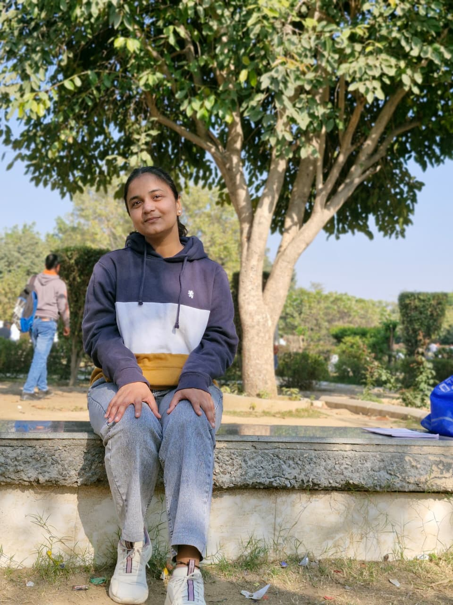

🤖 AI Automation Engineer · Agentic Systems Builder
B.Tech AIML Graduate from UIET, MDU Rohtak (8.5 CGPA). I build intelligent systems that don't just automate tasks — they think, decide, and act. From deploying Swahili-speaking voice receptionists for Kenyan clinics to building multi-agent AI ecosystems, I turn complex problems into fun, production-ready systems!

I'm Anshu Hooda, an AI Automation Engineer and B.Tech (AIML) Graduate from UIET, Maharshi Dayanand University, Rohtak (8.5 CGPA). My journey in AI isn't theoretical — every project I've built has touched real people, real hospitals, and real businesses.
I started as School Captain at JNV, leading 450+ students, and that leadership instinct followed me into tech — where I now lead as the primary debugger, architect, and problem-solver on complex production systems.
From deploying a bilingual voice receptionist in Nairobi, Kenya to identifying 25+ critical security bugs in a live healthcare system, I bridge the gap between AI theory and real-world impact. Completed research at IIITDM Kurnool under a Ministry of Education-sponsored project exploring ancient Indian logic and modern CS.
I believe the best AI engineers aren't just coders — they're systems thinkers who love building cool things, learning from history, and having a blast while doing it!
B.Tech in Artificial Intelligence & Machine Learning (Completed)
UIET, Maharshi Dayanand University, Rohtak · 2022–2026
Jawahar Navodaya Vidyalaya (JNV)
Class XII · 91.4% · CBSE Board
School Captain — led 450+ students
Building AI systems that solve real problems — reducing hospital wait times in India, helping insurance companies respond to disasters faster, and exploring 2600-year-old parallels between ancient Indian logic and modern computing.
From agentic AI systems to voice agents — here's what I build with.
Real systems for real clients — not toy demos.
High-performance, production-ready system prototypes engineered for corporate technical evaluations and case studies.
Watch a deep-dive walkthrough covering the core systems I have built to automate real-world clinical and operational workflows:
Whether you're looking for an AI engineer to build your next intelligent system, want to discuss research, or just want to geek out about Agentic AI — reach out anytime.
AI Automation Engineer · Agentic Systems · Voice AI · Former MoE Research Intern at IIITDM Kurnool